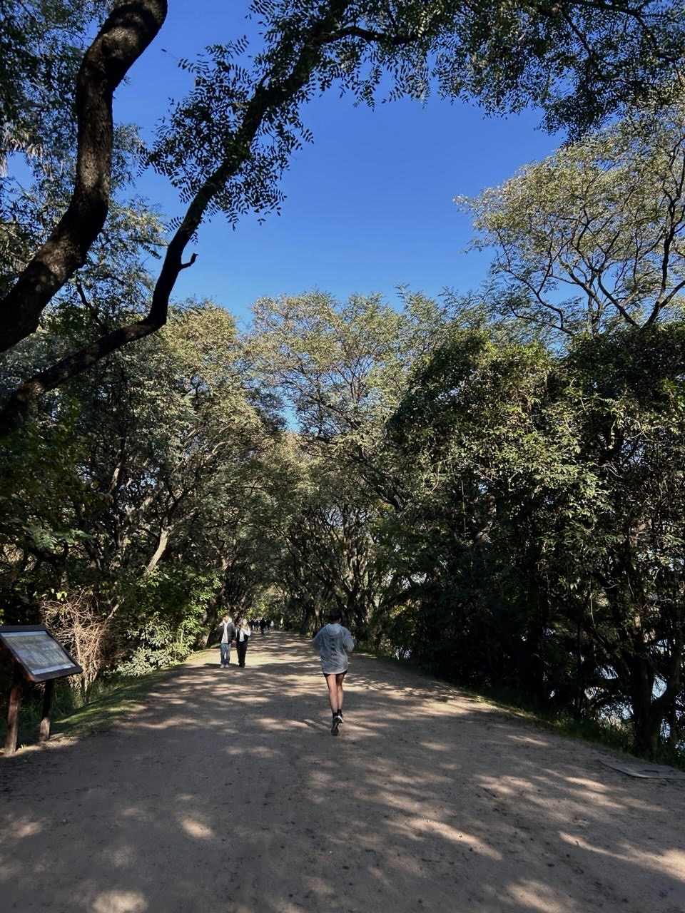

Reserva Ecológica Costanera Sur
Ubicada junto al Río de la Plata, la Reserva Ecológica Costanera Sur ofrece una experiencia de running diferente a cualquier otro circuito de la ciudad. Sus amplios senderos permiten correr rodeado de naturaleza, siendo una opción ideal para quienes buscan entrenar lejos del tránsito y el ruido urbano, con la sensación de estar fuera de Buenos Aires.
El circuito principal cuenta con aproximadamente 8 km por vuelta, aunque es posible sumar más kilómetros.
Distancia aproximada: 8 km por vuelta.
Mejor horario: Por la mañana o por la tarde. La reserva cierra al atardecer.

